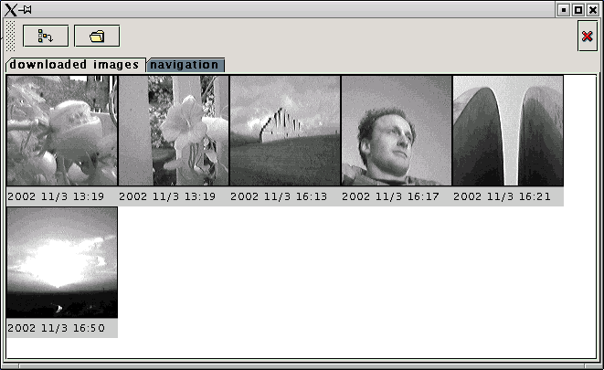

The "WQV wristcam tool" project has the following goals:
screen shot:

sub projects status
| cross platform | the tool is currently written in java so it should run on any system | (no change planned yet) |
| image download | downloading all images from the watch works | (working on downloading single images) |
| documentation | basics of the protocol are known | some documentation is avaiable |
| manage | it's possible to list all the images in one directory | (working on editing meta-data) |
links:
requirements:
download: to download goto the sourceforge wqv-wristcam project page